Project 1: Pre-trained Vision and Vision–Language Models
Setup. Models: torchvision vit_b_16 (ViT_B_16_Weights.IMAGENET1K_V1) and OpenAI CLIP ViT-B/32 (openai/clip-vit-base-patch32). Preprocessing: ViT resizes to 256, center-crops 224 and uses ImageNet normalisation; CLIP resizes to 224 (bicubic), center-crops 224 and uses CLIP normalisation. Device: forward passes on an NVIDIA RTX 4090, analysis on CPU. Versions: Python 3.12, torch 2.6.0, torchvision 0.21.0, transformers 5.20.2. Data: all images are from COCO 2017 (Flickr photos under Creative Commons licenses).
1. Part 1: Vision Transformer (ViT-B/16)
1.1 Task 1: image patches and model inputs
Cutting the image into patches
I wrote a function that cuts an image into non-overlapping 16×16 tiles in row-major order, so patch k sits at grid row ⌊k/14⌋ and column k mod 14. Figure 1 applies it to the 224×224 model input of one zebra photo.
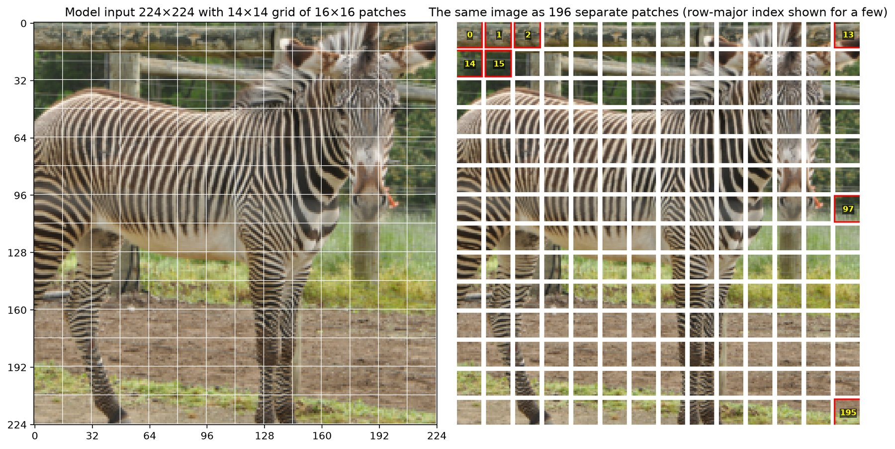
A 224×224 image with 16×16 patches gives a 14×14 grid, so there are 196 patches. Each patch holds 3·16·16 = 768 raw values. ViT puts one learned [CLS] token in front, so the encoder sees a sequence of 197 tokens. The checkpoint agrees: its positional embedding has 197 rows, and its patch projection has 768 output channels with a 16×16 kernel and stride 16.
What the three input components do
- Patch projection. A transformer works on a sequence of vectors. The projection turns each 16×16×3 patch into one 768-dimensional token with a learned linear map, zk = W·vec(patchk) + b. torchvision writes this as a convolution whose kernel size and stride are both 16, which applies the same W to every patch.
- Positional embeddings. Self-attention has no notion of order: shuffle the patches and the outputs are shuffled the same way. ViT therefore adds a learned vector to each token that depends only on its position in the sequence (197 vectors). Nothing tells the model that positions form a 2-D grid; it has to learn that.
- [CLS] token. One extra learned vector, not taken from any patch, is placed first. Over 12 attention layers it gathers information from all patches, and the classification head reads only the final [CLS] vector to produce the 1000 ImageNet logits. It is the model's summary of the whole image.
The input to the first encoder layer is therefore [cls; z0; …; z195] + pos_embedding, a 197×768 matrix.
My patches are not what the model sees
The tiles in Figure 1 are raw pixels. The model first normalises the image and then multiplies each flattened patch by the learned 768×768 matrix W (the 768×3×16×16 convolution kernel, reshaped) and adds a bias. To check this, I cut the normalised input into 196 patches with my own function, computed the 196 tokens as one matrix product, and compared them with the output of the convolution, reshaped the way torchvision flattens its 14×14 grid. In float64 the largest absolute difference was 1.1 × 10−16. So the patch embedding is one fixed linear map, and token k of the sequence is exactly patch k in row-major order. My patch picture shows what goes into that map; the model only ever works with its 768 outputs per patch.
Each of the 768 rows of W is a 3×16×16 colour filter, so the projection is a bank of small learned filters applied to every patch. In my copy the first 28 principal components of this bank explain only 41.7% of the variance, so the filters spread over many directions and individual ones are hard to read.
Positional embeddings learned a 2-D layout
For each patch position I computed the cosine similarity between its positional embedding and those of all 196 positions and drew the result on the 14×14 grid (Figure 2). Every map peaks at the query. Direct and diagonal neighbours have a mean similarity of 0.61, positions 1.5 to 3 patches away 0.14, and positions 6 to 10 patches away −0.15. The maps also show a cross through the query: same column 0.54, same row 0.37, neither −0.07. Similarity does not fall smoothly with distance (Pearson r = −0.32 over all pairs), and border positions resemble each other. The model was given a 1-D list of 197 vectors and recovered row and column structure from data alone, as the ViT paper reports for its larger models.
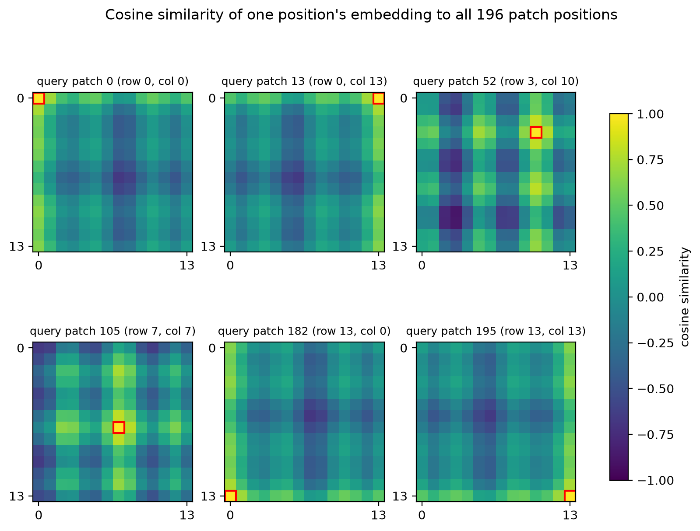
1.2 Task 2: predictions on 20 images
Images
For Parts 1 and 2 I picked 4 images in each of five categories that exist in ImageNet: zebra, banana, pizza, laptop and umbrella. In every image the target object is the main object. Three images per category are clear views; the fourth was chosen to be harder: a zebra behind a chain-link fence, a half-peeled banana, a close-up of a pizza slice being pulled away and cut off by the border, a laptop lid seen from behind and covered in stickers, and an umbrella lying upside down in tall grass. The selection rules for Part 3 are in Section 3.1.
Label mapping, preprocessing and accuracy rule
Table 1. Mapping from our five categories to ImageNet-1k class indices.
| Our category | ImageNet index | ImageNet class name | Accepted under the lenient rule |
|---|---|---|---|
| zebra | 340 | zebra | same as strict |
| banana | 954 | banana | same as strict |
| pizza | 963 | pizza | same as strict |
| laptop | 620 | laptop | 620 laptop or 681 notebook |
| umbrella | 879 | umbrella | same as strict |
Images were preprocessed with the checkpoint's transforms (see the setup note at the top), and probabilities are the softmax over all 1000 logits. Before running the model I fixed the scoring rule. Under the strict rule (main metric) a prediction is correct only if the top-1 index equals the mapped index. ImageNet has two classes for a portable computer, 620 "laptop" and 681 "notebook", so the lenient rule also accepts 681 for laptop images; no other synonyms are allowed. The confusion matrix has the five true categories as rows and the five categories plus "other" (any of the remaining 995 classes) as columns.
Top-5 predictions
Table 2. ViT-B/16 top-5 predictions and softmax probabilities (rounded to four decimals) for every image. Green cells are the mapped true class (or "notebook" for laptops).
| Category | COCO id | Top-1 | Top-2 | Top-3 | Top-4 | Top-5 | Strict rule |
|---|---|---|---|---|---|---|---|
| zebra | 172977 | zebra 0.8302 | ostrich 0.0039 | hartebeest 0.0011 | hyena 0.0006 | warthog 0.0006 | correct |
| zebra | 102333 | zebra 0.9005 | ostrich 0.0009 | hartebeest 0.0008 | hyena 0.0004 | impala 0.0004 | correct |
| zebra | 137734 | zebra 0.8595 | ostrich 0.0026 | hartebeest 0.0005 | trilobite 0.0004 | triceratops 0.0004 | correct |
| zebra | 371004 | zebra 0.8963 | ostrich 0.0013 | chainlink fence 0.0010 | worm fence 0.0004 | electric fan 0.0004 | correct |
| banana | 59708 | banana 0.8464 | zucchini 0.0184 | spaghetti squash 0.0063 | cucumber 0.0034 | custard apple 0.0032 | correct |
| banana | 527453 | banana 0.8840 | orange 0.0016 | artichoke 0.0011 | grocery store 0.0007 | pineapple 0.0005 | correct |
| banana | 58008 | banana 0.8535 | Granny Smith 0.0181 | orange 0.0172 | lemon 0.0042 | pomegranate 0.0030 | correct |
| banana | 99642 | banana 0.8669 | spatula 0.0129 | bolete 0.0067 | pineapple 0.0029 | spaghetti squash 0.0027 | correct |
| pizza | 360393 | pizza 0.8948 | frying pan 0.0006 | carbonara 0.0005 | dough 0.0005 | spatula 0.0004 | correct |
| pizza | 443742 | pizza 0.8801 | dough 0.0008 | zucchini 0.0006 | carbonara 0.0005 | spatula 0.0003 | correct |
| pizza | 93053 | pizza 0.8851 | dough 0.0008 | zucchini 0.0005 | spatula 0.0004 | soup bowl 0.0003 | correct |
| pizza | 353027 | pizza 0.8861 | dough 0.0029 | bakery 0.0022 | bagel 0.0016 | French loaf 0.0010 | correct |
| laptop | 248631 | notebook 0.4017 | mouse 0.2695 | laptop 0.1360 | computer keyboard 0.0306 | joystick 0.0281 | lenient only |
| laptop | 8999 | notebook 0.7076 | laptop 0.1138 | space bar 0.0209 | computer keyboard 0.0185 | modem 0.0069 | lenient only |
| laptop | 232121 | laptop 0.5558 | beer glass 0.1871 | notebook 0.0900 | monitor 0.0191 | desktop computer 0.0111 | correct |
| laptop | 417153 | laptop 0.9903 | notebook 0.0023 | pick 0.0003 | carton 0.0002 | paintbrush 0.0002 | correct |
| umbrella | 286141 | umbrella 0.9801 | tiger cat 0.0011 | tabby 0.0009 | lynx 0.0002 | paper towel 0.0002 | correct |
| umbrella | 123916 | umbrella 0.9117 | schipperke 0.0052 | Egyptian cat 0.0028 | Scotch terrier 0.0014 | tabby 0.0013 | correct |
| umbrella | 319322 | umbrella 0.8126 | mountain tent 0.0224 | Norwegian elkhound 0.0005 | alp 0.0005 | paper towel 0.0005 | correct |
| umbrella | 565572 | mountain tent 0.5168 | umbrella 0.3217 | sleeping bag 0.0009 | parachute 0.0007 | cuirass 0.0005 | wrong |
Accuracy and confusion matrix
Table 3. Top-1 accuracy per category under both rules.
| True category | Strict | Lenient | Mean top-1 probability |
|---|---|---|---|
| zebra | 4/4 | 4/4 | 0.872 |
| banana | 4/4 | 4/4 | 0.863 |
| pizza | 4/4 | 4/4 | 0.887 |
| laptop | 2/4 | 4/4 | 0.664 |
| umbrella | 3/4 | 3/4 | 0.805 |
| all 20 | 17/20 = 0.85 | 19/20 = 0.95 | 0.818 |
Table 4. Confusion matrices (rows = true category, columns = predicted; "other" = any of the remaining 995 ImageNet classes).
| true \ pred. | zebra | banana | pizza | laptop | umbrella | other |
|---|---|---|---|---|---|---|
| zebra | 4 | 0 | 0 | 0 | 0 | 0 |
| banana | 0 | 4 | 0 | 0 | 0 | 0 |
| pizza | 0 | 0 | 4 | 0 | 0 | 0 |
| laptop | 0 | 0 | 0 | 2 | 0 | 2 |
| umbrella | 0 | 0 | 0 | 0 | 3 | 1 |
| true \ pred. | zebra | banana | pizza | laptop | umbrella | other |
|---|---|---|---|---|---|---|
| zebra | 4 | 0 | 0 | 0 | 0 | 0 |
| banana | 0 | 4 | 0 | 0 | 0 | 0 |
| pizza | 0 | 0 | 4 | 0 | 0 | 0 |
| laptop | 0 | 0 | 0 | 4 | 0 | 0 |
| umbrella | 0 | 0 | 0 | 0 | 3 | 1 |
Strict top-1 accuracy is 17/20 = 0.85 and lenient accuracy is 19/20 = 0.95. Zebra, banana and pizza are 4/4. Laptop is 2/4 strict and 4/4 lenient, and umbrella is 3/4 under both rules. Four of the five images I chose as harder are classified correctly. Two of the three strict errors are clear laptop photos, so most strict errors come from the label set, not from hard images.
Most correct predictions on clean images have a top-1 probability between 0.83 and 0.90, with a median of 0.874 over all 20 images. The torchvision training recipe for this checkpoint uses label smoothing with mixup and cutmix, which keeps the model from putting all its probability on one class, so 0.85 here is not a sign of doubt. A low top-1 together with a competitor that holds real probability is a better sign of uncertainty.
Successful examples
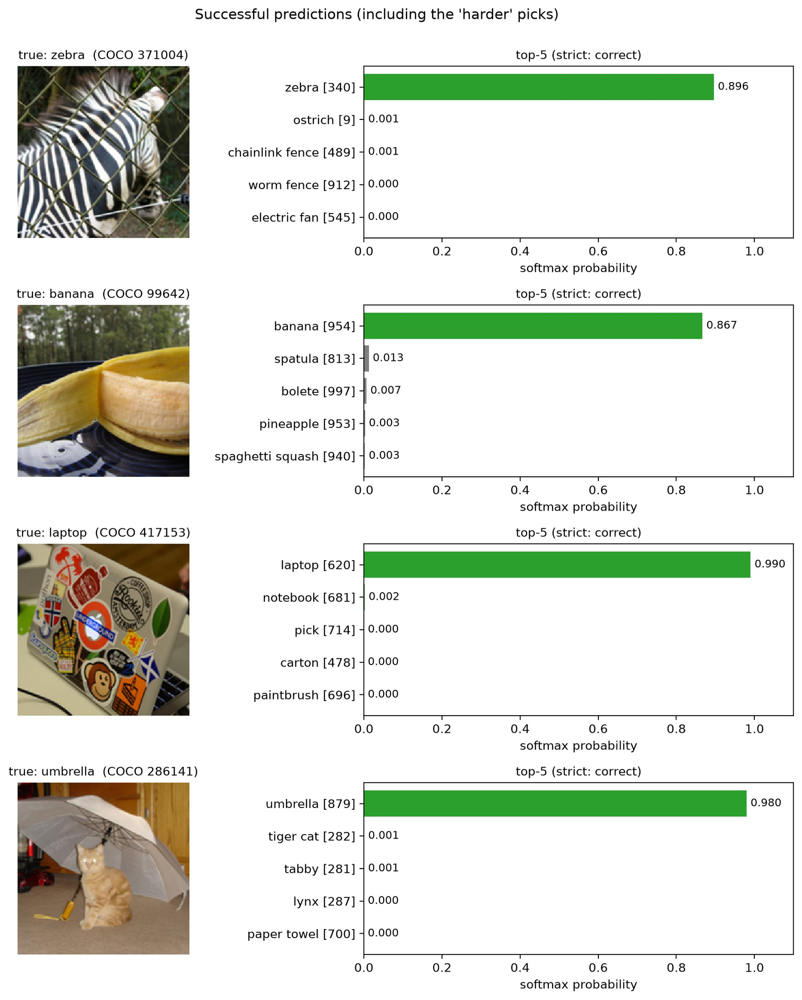
- Zebra behind a chain-link fence (371004), zebra 0.896. The wire crosses almost every patch, but the stripe texture still wins. The model registers the fence: "chainlink fence" and "worm fence" appear in the top-5 at 0.001 or less.
- Cat under an umbrella (286141), umbrella 0.980. The cat sits in the middle of the crop, but the open umbrella fills most of the frame. Cat classes reach the top-5 (tiger cat, tabby) with about 0.001 each.
Incorrect or uncertain examples
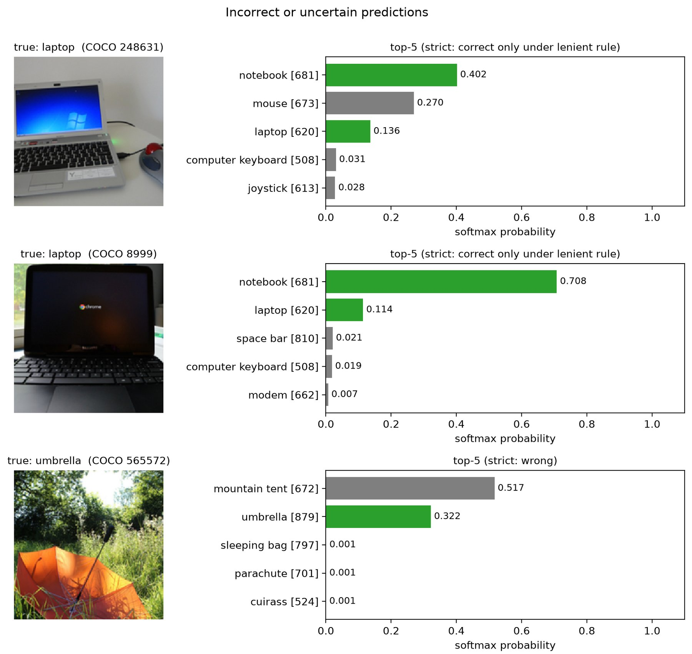
- Netbook with a mouse (248631), notebook 0.402, wrong under the strict rule. The probability splits three ways: notebook 0.402, mouse 0.270, laptop 0.136. Part of the split is the laptop/notebook overlap. The rest comes from the mouse competing for the single label. This is the least confident prediction in the set.
- Chromebook (8999), notebook 0.708, wrong under the strict rule. There is one device and nothing else, yet ImageNet has two names for it. The model prefers "notebook" (0.708) over "laptop" (0.114). It recognises the object, and the strict rule rejects only the name.
- Upside-down orange umbrella in tall grass (565572), mountain tent 0.517, wrong under both rules. The canopy lies open side up, so the usual dome-over-a-handle shape is gone. What remains is bright nylon in a grassy outdoor scene, which is typical of tent photos. Umbrella still gets 0.322, so the model is torn.
What a fixed set of 1000 categories cannot answer
- The model always answers, and only from its list. The softmax spreads exactly 1.0 over the same 1000 classes for every image. There is no "none of these", which is why our five-way task needs an "other" column.
- Overlapping labels make "correct" our decision. On the laptop photos the model divides probability between "laptop" and "notebook" (for 248631, 0.136 + 0.402). Whether "notebook" counts is not part of the model. Strict (0.85) and lenient (0.95) accuracy differ only because of this one overlap.
- One label per image, even when several things are visible. Umbrella images 286141 and 123916 each show a cat clearly. ImageNet has five cat classes, but together they get only 0.0025 and 0.0055. A top-1 label cannot say "a cat and an umbrella".
- No relations, actions or attributes. "What is the cat doing under the umbrella?", "Is the umbrella upside down?" and "How many bananas are there?" have no answer in the output space.
- Concepts outside the list are forced into the nearest class. There is no class for person, snow or grass. The upside-down umbrella became a "mountain tent". Adding a category means training a new head on labelled examples; the class names are just labels on 1000 outputs, so a new class cannot be described in words. CLIP in Part 2 removes this limit.
2. Part 2: CLIP ViT-B/32
Part 2 uses the same 20 images as Part 1. The model weights stay fixed throughout.
2.1 Task 1: implementing the image–text similarity
CLIP's two encoders map an image to a vector x and a text to a vector t in a shared 512-dimensional space. The cached embeddings are not unit length (for example, the first three images have norms of 10.7 to 11.1 and one set of five prompts has norms of 8.4 to 10.0), so normalisation is a real step. I implemented the scoring in numpy:
- L2-normalise every embedding: x̂ = x / ‖x‖2, and the same for t.
- Cosine similarity between image i and text j:
sij = x̂i⊤t̂j ∈ [−1, 1], or for all pairs at once S = X̂T̂⊤.
- Logits with the learned scale. The checkpoint stores the logarithm τ = 4.6052 of the multiplier, so
zij = eτ · sij, eτ = 100.00.(CLIP clips the multiplier at 100 during training, and this checkpoint sits at that limit.)
- Softmax over the candidate texts for each image:
pij = exp(zij) / Σk exp(zik).
- Prediction: ŷi = argmaxj zij, which is the same as the argmax of sij or pij.
I compared my logits with logits_per_image from a full CLIP forward pass on the GPU. The largest absolute differences were 5.6 × 10−6, 8.5 × 10−6 and 9.7 × 10−6 for the three templates of Task 2, on logits of size 15 to 35. That is float32 rounding, every template passes numpy's allclose test with default tolerances, and the predicted class is identical everywhere.
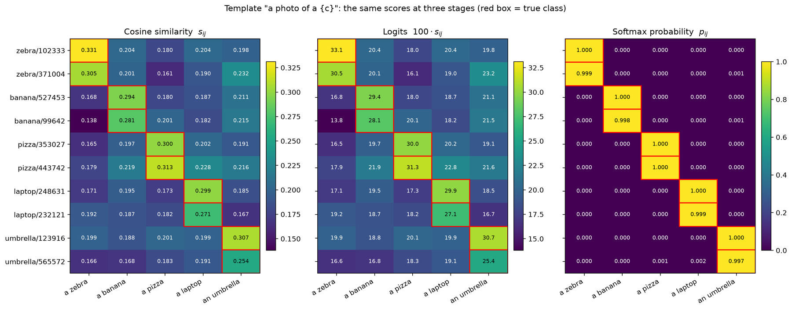
Cosine similarity, logits and probabilities
Cosine similarity belongs to one image–text pair and does not depend on the other candidates. In Figure 5 all cosines fall between about 0.14 and 0.33, and with "a photo of a {c}" the correct prompt leads the best wrong prompt by only 0.06 to 0.13. Image–text cosines in CLIP are small in absolute terms; only their ranking carries meaning. Logits are the same numbers times 100, so the ranking and colour pattern are unchanged and a cosine gap of 0.06 becomes a logit gap of 6. The softmax normalises each row over the five candidates. With gaps of 6 or more (e6 ≈ 400) almost every row is one-hot, so the probability says little about confidence here. The logit margin keeps more information. The least saturated rows are the hard images: the upside-down umbrella (P = 0.997) and the half-peeled banana (P = 0.998).
Why the softmax depends on the candidate texts
For the three images with the smallest margin I recomputed the softmax after removing either the runner-up prompt or the true prompt (Table 5). The cosines do not change, because removing one prompt cannot change the angle between an image and another prompt. The probabilities do change, because the softmax divides by a sum over whichever candidates are present. Removing the runner-up barely matters, since it held a fraction of a percent. Removing the true class pushes the mass onto wrong prompts: the upside-down umbrella becomes "laptop" with 0.62, although its cosine with "a photo of a laptop" is still 0.191. A softmax probability is a score relative to the offered list, and zero-shot CLIP always picks one of the offered labels even when none fits.
Table 5. Softmax probabilities ("a photo of a {c}") for three candidate sets. Highlighted = predicted class. The italic row gives the cosines, which are the same in every set.
| Image | Candidate set | P(zebra) | P(banana) | P(pizza) | P(laptop) | P(umbrella) | Prediction |
|---|---|---|---|---|---|---|---|
| umbrella/565572 | all 5 classes | 0.000 | 0.000 | 0.001 | 0.002 | 0.997 | umbrella |
| drop runner-up (laptop) | 0.000 | 0.000 | 0.001 | removed | 0.999 | umbrella | |
| drop true class (umbrella) | 0.050 | 0.062 | 0.266 | 0.622 | removed | laptop | |
| cosine (same in every set) | 0.166 | 0.168 | 0.183 | 0.191 | 0.254 | ||
| banana/99642 | all 5 classes | 0.000 | 0.998 | 0.000 | 0.000 | 0.001 | banana |
| drop runner-up (umbrella) | 0.000 | 1.000 | 0.000 | 0.000 | removed | banana | |
| drop true class (banana) | 0.000 | removed | 0.182 | 0.029 | 0.789 | umbrella | |
| cosine (same in every set) | 0.138 | 0.281 | 0.201 | 0.182 | 0.215 | ||
| banana/59708 | all 5 classes | 0.000 | 0.998 | 0.000 | 0.001 | 0.001 | banana |
| drop runner-up (umbrella) | 0.000 | 0.999 | 0.000 | 0.001 | removed | banana | |
| drop true class (banana) | 0.001 | removed | 0.013 | 0.421 | 0.566 | umbrella | |
| cosine (same in every set) | 0.137 | 0.267 | 0.163 | 0.198 | 0.201 |
2.2 Task 2: comparing prompt wording
The three templates are "{c}", "a photo of a {c}" and "an image showing a {c}", filled with the five category names. For umbrella the article is corrected ("a photo of an umbrella", "an image showing an umbrella"). The image embeddings, the encoder weights and the logit scale are the same for all three; only the text queries change.
Table 6. Zero-shot results per template. Margins are in logits (true class minus best wrong class); the last column is the Task 1 check against CLIP's built-in logits.
| Template | Accuracy | Mean cos(true) | Mean margin | Min margin | Image with min margin | Min P(true) | Max |own − built-in| logit |
|---|---|---|---|---|---|---|---|
| "{c}" | 20/20 | 0.282 | 8.80 | 4.16 | umbrella/565572 | 0.971 | 5.56 × 10-6 |
| "a photo of a {c}" | 20/20 | 0.295 | 9.23 | 6.32 | umbrella/565572 | 0.997 | 8.53 × 10-6 |
| "an image showing a {c}" | 20/20 | 0.311 | 9.77 | 6.65 | banana/99642 | 0.998 | 9.68 × 10-6 |
Table 7. Confusion matrices for the three templates (rows = true, columns = predicted). All three are the same diagonal matrix.
| true \ pred. | zebra | banana | pizza | laptop | umbrella |
|---|---|---|---|---|---|
| zebra | 4 | 0 | 0 | 0 | 0 |
| banana | 0 | 4 | 0 | 0 | 0 |
| pizza | 0 | 0 | 4 | 0 | 0 |
| laptop | 0 | 0 | 0 | 4 | 0 |
| umbrella | 0 | 0 | 0 | 0 | 4 |
| true \ pred. | zebra | banana | pizza | laptop | umbrella |
|---|---|---|---|---|---|
| zebra | 4 | 0 | 0 | 0 | 0 |
| banana | 0 | 4 | 0 | 0 | 0 |
| pizza | 0 | 0 | 4 | 0 | 0 |
| laptop | 0 | 0 | 0 | 4 | 0 |
| umbrella | 0 | 0 | 0 | 0 | 4 |
| true \ pred. | zebra | banana | pizza | laptop | umbrella |
|---|---|---|---|---|---|
| zebra | 4 | 0 | 0 | 0 | 0 |
| banana | 0 | 4 | 0 | 0 | 0 |
| pizza | 0 | 0 | 4 | 0 | 0 |
| laptop | 0 | 0 | 0 | 4 | 0 |
| umbrella | 0 | 0 | 0 | 0 | 4 |
All three templates classify all 20 images correctly, so the confusion matrices are identical and no image changes its predicted class. On this small, clean set accuracy cannot separate the wordings, but the scores move:
- The longer templates give the true class a larger lead on average. The mean margin rises from 8.80 to 9.23 to 9.77, the smallest margin from 4.16 to 6.32 to 6.65, and the lowest P(true) from 0.971 to 0.997 to 0.998.
- All prompts move together. The mean cosine with the true prompt rises from 0.282 to 0.295 to 0.311, and the mean cosine with the wrong prompts also rises, from 0.181 to 0.187 to 0.196. A shared phrase such as "a photo of" describes every one of these photos, so it lifts every candidate; the true class gains a little more.
- The effect differs between images. The margin is larger with "a photo of a {c}" than with "{c}" for 13 of 20 images, and larger with "an image showing a {c}" than with "{c}" for 15 of 20.
The pizza 93053 and the black umbrella on snow (319322) gain the most: their margins go from 7.0 to 9.2 to 10.5 and from 7.1 to 8.6 to 10.2. The upside-down umbrella in grass (565572) is the hardest image for the first two templates. With the bare word "umbrella" its true-class cosine is only 0.220 and P(true) = 0.971; "a photo of an umbrella" raises these to 0.254 and 0.997. The fenced zebra (371004) goes the other way. The bare word gives its largest margin (9.6), and with "a photo of a {c}" its cosine with the umbrella prompt jumps from 0.198 to 0.232 and the margin drops to 7.4. A template that helps on average can still hurt one image. This fits the CLIP paper's remark (Radford et al., 2021) that a single word is an unusual caption, while a short sentence is closer to the alt-text CLIP was trained on.
Prompting is not fine-tuning
Changing the prompt changes only where the text encoder places the five class queries. "zebra" and "a photo of a zebra" are related but different vectors: across categories and template pairs their cosine is between 0.909 and 0.963. The image embeddings, the weights of both encoders and the logit scale stay fixed. No loss is computed and no parameter is updated, so a prompt can be swapped per query at no cost and is fully reversible. Fine-tuning computes a loss on labelled examples and updates the weights by gradient descent. That changes the encoders themselves, moves the image embeddings too, and applies to every later input. A prompt can only re-rank what the frozen embedding space already encodes; it cannot teach CLIP a visual distinction it does not already make.
Comparison with Part 1
Table 8. ViT-B/16 (Part 1) and CLIP ViT-B/32 on the same 20 images.
| Model and rule | Candidates | Correct / 20 |
|---|---|---|
| ViT-B/16, strict | 1000 ImageNet classes | 17 |
| ViT-B/16, lenient (laptop or notebook) | 1000 ImageNet classes | 19 |
| ViT-B/16 restricted to our 5 classes (supplementary) | 5 (laptop = max of 620, 681) | 20 |
| CLIP ViT-B/32, "{c}" | 5 prompts | 20 |
| CLIP ViT-B/32, "a photo of a {c}" | 5 prompts | 20 |
| CLIP ViT-B/32, "an image showing a {c}" | 5 prompts | 20 |
Under the lenient rule the two models disagree on one image, the upside-down orange umbrella: ViT says "mountain tent" (0.517, umbrella second at 0.322), and CLIP says umbrella, though this is also CLIP's least confident image for two of the three templates. CLIP's five-way list has no tent, so it cannot make ViT's mistake. When ViT is restricted to the same five classes (taking the larger of the laptop and notebook logits) it also gets 20/20.
This does not show that either model is better in general. ViT-B/16 is a supervised 1000-way classifier trained with cross-entropy on ImageNet-1k (about 1.28 M labelled images); CLIP is trained contrastively on about 400 M web image–text pairs, and its "classes" are prompts chosen at test time. ViT picks one of 1000 classes, some of them near-synonyms (laptop/notebook) or visually close (umbrella/tent), while CLIP here picks one of 5 well-separated prompts. The patch sizes (16 vs 32) and preprocessing differ. With 20 hand-picked images, one image is 5 percentage points, so gaps of one to three images support no general claim.
2.3 Task 3: the image embedding space
I L2-normalised the 20 CLIP image embeddings and computed all image–image cosines (Figure 6).
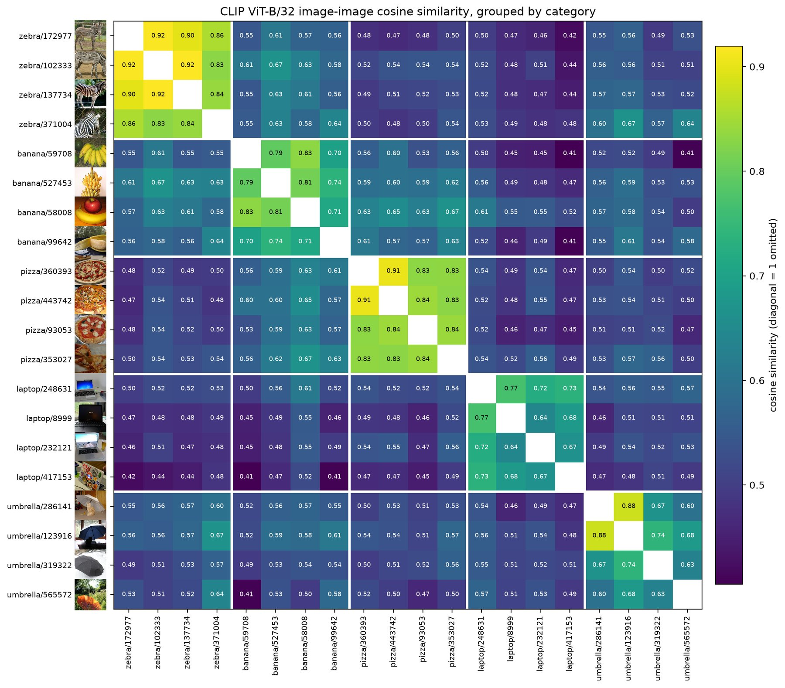
Images of the same category are clearly closer: the mean cosine is 0.778 within a category (lowest pair 0.597) and 0.532 across categories (highest pair 0.670). Every image's nearest neighbour is from its own category (20/20). The distributions still overlap, since 21 of the 160 cross-category pairs are more similar than the least similar within-category pair. Zebra (0.877) and pizza (0.848) form the tightest blocks; their photos share a strong texture (stripes, a round pizza seen from above) and similar framing. Banana (0.765), laptop (0.703) and umbrella (0.700) vary more in viewpoint, colour and scene.
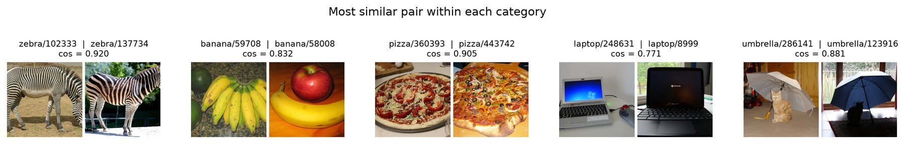
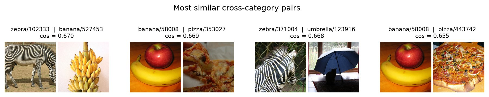
Within a category (Figure 7), the most similar pairs are two side views of whole zebras (102333 and 137734, 0.920) and two whole pizzas seen from above (360393 and 443742, 0.905). The pair that tells the most is umbrella 286141 and 123916 (0.881). The umbrellas differ in colour, white-grey against dark blue, but both photos show the same scene: an open umbrella indoors with a cat sitting under it. The least similar within-category pairs (not shown) differ in setting: the indoor cat scene against the orange umbrella in sunlit grass (0.597), and a bunch of bananas next to an avocado against a single half-peeled banana outdoors (0.698). The fenced zebra stays close to the other zebras (even its least similar zebra pair, with 102333, has 0.831), because the stripes dominate.
Across categories (Figure 8), banana 58008 (a banana and a red apple) is close to two pizzas (0.669 and 0.655): food on a table in warm red and orange tones. The fenced zebra 371004 appears in three of the six most similar cross pairs, with umbrella 123916 (0.668; window grilles and umbrella ribs give a grid-like structure), umbrella 565572 (0.637) and banana 99642 (0.636), both outdoor shots with green foliage. The fence and the greenery, not the zebra, are the plausible link; the same image had the largest off-target text score in Task 2. The most similar cross pair, zebra 102333 and banana 527453 (0.670), is the hardest to explain. Both have pale tan tones and many parallel elongated shapes, but with 20 images that is a guess.
Image–image cosines (0.41 to 0.92) are much larger than image–text cosines (mean 0.295 for the true prompt). The two modalities occupy different regions of the shared space, so only rankings within one kind of comparison are meaningful.
In these examples CLIP's image embedding is organised first by the main object's category, with same-category pairs about 0.25 more similar on average. It embeds the whole scene, though. Scene content (a cat under an umbrella, food on a table), setting (indoors, outdoor greenery), texture and structure (stripes, fences, grids) and, less strongly, colour all move the similarity. This matches CLIP's training signal: web captions describe whole scenes, and the model is never told which object is the label. With 20 images these are observations, not measurements.
3. Part 3: telling actions apart when the object is the same
Parts 1 and 2 asked what the main object is. Part 3 asks whether CLIP ViT-B/32 can tell what a person is doing with an object: riding vs pushing a bicycle, flying vs holding a kite, sitting vs lying on a bench. The model, the scoring and the logit scale are those of Part 2.
3.1 Task 1: hypothesis and comparison sets
Hypothesis (written down before any result)
CLIP's image–text similarity is dominated by which objects and scene are present, not by what the person does with the object. When two descriptions name the same object and differ only in the action, CLIP will match images to descriptions much less reliably than it recognises the object. Three checkable predictions follow:
- P1 (2×2 test). Image-to-description accuracy over the 24 images will be above chance (50%) but clearly below perfect, with small margins.
- P2 (object vs action). Against all 24 descriptions, an image's correct object will be found more often, and with larger margins, than its correct action.
- P3 (text side). The two descriptions of a set will have very similar text embeddings, more similar than descriptions that share the verb but name a different object.
Selection rules
The rules were fixed before any CLIP output existed.
- Each set fixes one COCO object category and two actions, side a and side b. Descriptions follow one template, "a person ⟨verb⟩ a ⟨object⟩". Two sets add words to side a ("riding a surfboard on a wave", "skiing on skis").
- Every COCO image has about five human captions. A caption votes for a side when it matches the verb phrase followed by the object noun (with up to three words between). An image is a candidate for a side only if at least two captions vote for that side and none for the other.
- The image must contain an annotated, non-crowd instance of the object and an annotated person. The object box is the largest instance; the person box is the person closest to it among people at least 25% as large as the largest person.
- NoDerivs licenses are excluded because crops are shown. Attribution and ShareAlike licenses come first; a NonCommercial license was used only once, for set01b.
- Candidates are ranked by license, then by having exactly one person, then by caption votes and person size. I checked the top candidates by eye on contact sheets with their boxes and picked one image per side where the action is visible and the person and object are not tiny or hidden.
This gives 12 sets and 24 images, each set with two images and two descriptions. Image a matches text a and image b matches text b; the title of each photo in Figure 9 is its correct description.
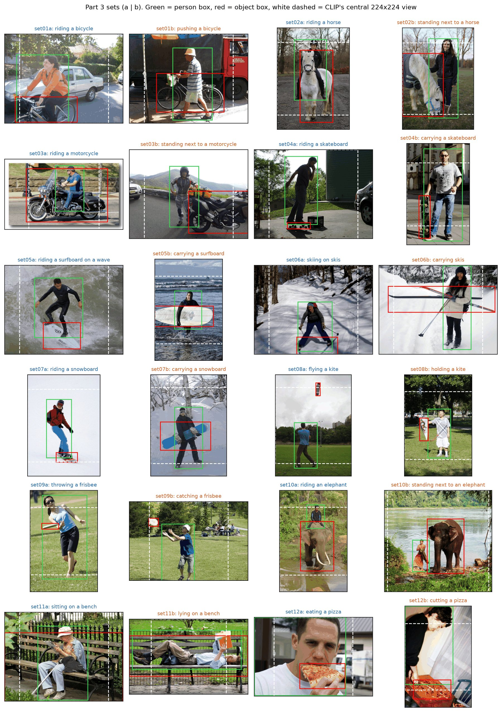
Known confounds
The two images of a set are different photos, so more than the action changes:
- Scene. Side-a actions often come with a typical scene (a wave, a snow slope, open sky), while side-b photos are more often on a beach, a street or a parking lot. CLIP may match scene words instead of pose. The two set12 scenes differ a lot: a close-up face eating against a boy at a cutting board.
- Ambiguous poses. In set04a the "rider" stands almost still on the board and talks on the phone. Set09 (throwing vs catching a frisbee) differs only in pose and frisbee position.
- Object size and visibility. Some objects are small (the set08a kite, the set09 frisbees, the set04a skateboard). CLIP's center crop also hides part of the photo: on the full images only 53% of the pizza box reaches the input for set12b, 64% of the kite (set08a) and the bench (set11b), and 71% of the skateboard (set04b).
- Text beyond the verb. "on a wave" and "on skis" add words to side a, and "standing next to" (set02, set03, set10) is longer than "riding".
- Resolution and selection. COCO photos are about 640 px on the long side and CLIP sees 224×224, so hands and small objects shrink to a few pixels. Caption matching and the visual check favour clear, typical scenes, which makes the task easier than a random sample.
3.2 Task 2: evaluation on the full collection
For each set I normalised the two image and two text embeddings and formed the 2×2 cosine matrix (rows = images, columns = texts), using the Task 1 pipeline from Part 2. My logits match CLIP's built-in logits to within 9.2 × 10−6. An image counts as correct if its own description has the higher cosine in its row, and a set is "both correct" if both images are. The margin of an image is cos(own description) − cos(other description). Results use all 24 images.
Table 9. The twelve 2×2 cosine matrices on full images with standard preprocessing. The bold diagonal is the correct match; ✓/✗ marks whether the image picks its own description.
| text a | text b | ||
|---|---|---|---|
| img a | 0.309 | 0.305 | ✓ |
| img b | 0.291 | 0.300 | ✓ |
| text a | text b | ||
|---|---|---|---|
| img a | 0.277 | 0.283 | ✗ |
| img b | 0.276 | 0.308 | ✓ |
| text a | text b | ||
|---|---|---|---|
| img a | 0.300 | 0.287 | ✓ |
| img b | 0.279 | 0.294 | ✓ |
| text a | text b | ||
|---|---|---|---|
| img a | 0.298 | 0.289 | ✓ |
| img b | 0.318 | 0.313 | ✗ |
| text a | text b | ||
|---|---|---|---|
| img a | 0.301 | 0.287 | ✓ |
| img b | 0.287 | 0.292 | ✓ |
| text a | text b | ||
|---|---|---|---|
| img a | 0.310 | 0.296 | ✓ |
| img b | 0.286 | 0.307 | ✓ |
| text a | text b | ||
|---|---|---|---|
| img a | 0.320 | 0.312 | ✓ |
| img b | 0.331 | 0.330 | ✗ |
| text a | text b | ||
|---|---|---|---|
| img a | 0.343 | 0.321 | ✓ |
| img b | 0.306 | 0.301 | ✗ |
| text a | text b | ||
|---|---|---|---|
| img a | 0.351 | 0.352 | ✗ |
| img b | 0.339 | 0.337 | ✗ |
| text a | text b | ||
|---|---|---|---|
| img a | 0.323 | 0.316 | ✓ |
| img b | 0.290 | 0.294 | ✓ |
| text a | text b | ||
|---|---|---|---|
| img a | 0.320 | 0.306 | ✓ |
| img b | 0.288 | 0.289 | ✓ |
| text a | text b | ||
|---|---|---|---|
| img a | 0.323 | 0.306 | ✓ |
| img b | 0.335 | 0.356 | ✓ |
Table 10. Accuracy on the full collection.
| Measure (full images, standard preprocessing) | Value |
|---|---|
| Image → description accuracy (24 images) | 18/24 = 0.750 |
| Sets with both images correct | 7/12 |
| side a correct (ride, ski, fly, throw, sit, eat) | 10/12 |
| side b correct (push, stand next to, carry, hold, catch, lie, cut) | 8/12 |
| Description → image accuracy (column-wise, 24 texts) | 16/24 = 0.667 |
| Sets with both descriptions correct (column-wise) | 4/12 |
| Object found among all 24 descriptions | 24/24 |
| Mean softmax P(own description), two-way | 0.675 |
| Median |margin| (cosine units) | 0.0082 |
| One-sided exact binomial p, ≥ 18/24 correct if guessing | 0.0113 |
P1 holds. On full images 18 of 24 images (0.75) pick their own description, and 7 of 12 sets have both images right. If CLIP were guessing, 18 or more of 24 would happen with probability 0.011, so CLIP carries some action information. The signal is weak. The median margin is 0.008 in cosine units, on top of image–text cosines that all lie between about 0.27 and 0.36. At CLIP's scale of 100, a margin of 0.01 is a softmax of about 0.73 against 0.27, and the mean probability of the correct description is only 0.675. The failures are set02a (riding a horse), set04b (carrying a skateboard), set07b (carrying a snowboard), set08b (holding a kite) and both images of set09 (throwing vs catching a frisbee). In set04, set07 and set08 both images prefer the side-a activity, which looks like a bias toward the more typical, more photographed action; set02 goes the other way, and the set09 images swap descriptions. Matching in the other direction, description to image, is lower still (16/24 texts, 4/12 sets), partly because some photos score higher with every description (set09a has 0.35 with both).
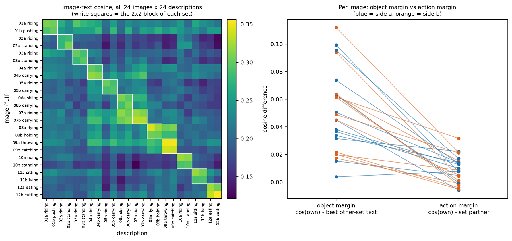
P2 holds. Against all 24 descriptions, every image ranks a description of its own object first (24/24). The median object margin (0.047) is about six times the median action margin (0.008), and the object margin is larger for 23 of 24 images. The 24×24 matrix in Figure 10 is block-diagonal by object; inside each block the two actions are hard to tell apart.
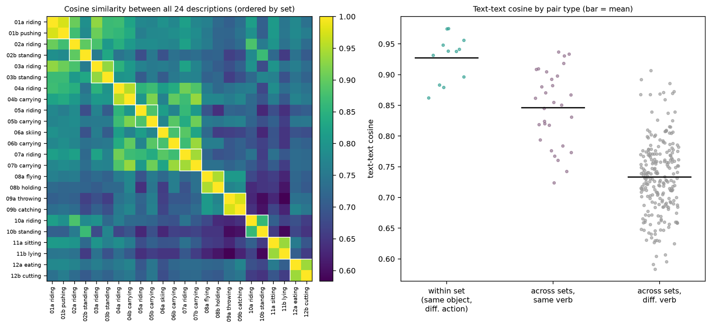
P3 holds, with one limit. The two descriptions of a set have cosines from 0.862 to 0.975 (mean 0.927). That is higher on average than pairs sharing the verb but not the object (mean 0.846) and much higher than pairs sharing neither (0.733); Figure 11 shows the matrix and the three distributions. For 18 of 24 descriptions the nearest other description is the set partner. In the six exceptions the nearest description names a related object, and in five of them it also shares the verb, for example "riding a horse" → "riding a bicycle" and "carrying skis" → "carrying a snowboard"; the sixth is "skiing on skis" → "riding a snowboard". The text encoder does encode the verb, but the object word dominates, and the ranges overlap (lowest within-set 0.862, highest cross-set 0.937).
This explains why the margins are so small. For unit vectors the margin v̂·(t̂own − t̂other) can be at most ‖t̂own − t̂other‖ = √(2(1 − c)), where c is the text–text cosine; for these pairs that bound is 0.22 to 0.53. The observed margins use a median of only about 3% of it, so the image embedding is almost orthogonal to the "action direction". Sets whose descriptions are more alike tend to have smaller margins (Pearson r = −0.43 over 12 sets, a weak tendency with 12 points).
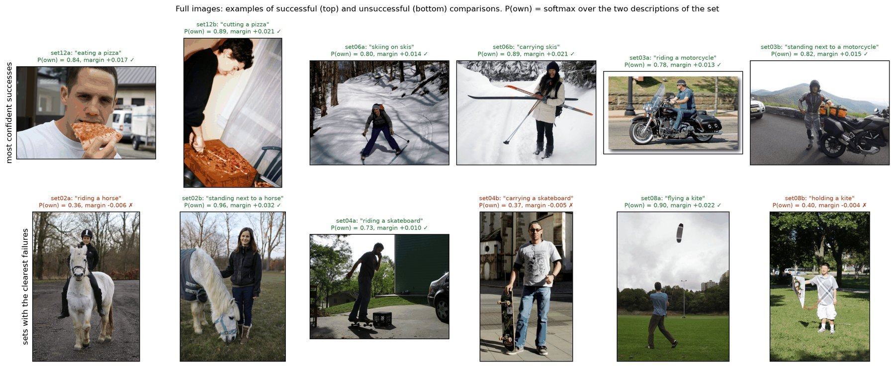
The most confident successes are set12 (eating vs cutting a pizza, margins +0.017 and +0.021), set06 (skiing vs carrying skis, +0.014 and +0.021) and set03 (riding vs standing next to a motorcycle, +0.013 and +0.015). In set12 the two scenes differ a lot (a face close-up against a cutting board), and set06 and set03 each have extra words in one description ("skiing on skis", "standing next to"). Set02b, "standing next to a horse", has the largest margin of all (+0.032), and its description is the longer one. Part of these successes may therefore come from scene and wording. Among the failures, set02a ("riding a horse", P(own) = 0.36) loses although the rider is plainly on the horse. Set04 and set08 fail on side b: the man holding a skateboard upright and the boy holding a kite are both scored closer to "riding" and "flying". In set04 the rider barely moves, so the action is ambiguous even for a person.
3.3 Task 3: one controlled change, removing the context
Hypothesis and design (stated before the crop results)
CLIP encodes the whole input into one vector, and the person and object often fill only part of the photo. The background (street, beach, sky, crowd) might dilute or mislead the action signal. If so, removing most of the background should raise the margins, the image-to-description accuracy and the number of sets with both images correct. If the background helps instead, for example a wave for surfing or a slope for skiing, the crop should hurt the images whose action comes with such a scene.
The one change: each image is replaced by its crop to the union of the COCO person and object boxes, enlarged by 10% of the box size on each side and clamped to the image. The 24 images, the 24 descriptions, the model and the scoring stay the same.
First attempt and the padded design
My first version passed the crops straight to CLIP's processor. Its center crop cut away the top and bottom of many tall crops, so the snowboard in set07a and the kite in set08a, for example, were partly or fully lost. That version changed context and object visibility at once (accuracy 18/24 to 21/24, mean margin change +0.0013 with a 95% bootstrap interval of [−0.0027, +0.0052]). To remove the visibility change, both the full image and the crop are now padded to a square with CLIP's mean colour (RGB 123, 117, 104) before the processor, so the person and object boxes reach the input completely in both conditions. The crop still shows the person 1.0 to 2.05 times larger after resizing, so cropping removes context and zooms in at the same time. Set06b's crop is the whole image, so its two conditions are identical.
Main comparison: padded full image vs padded crop
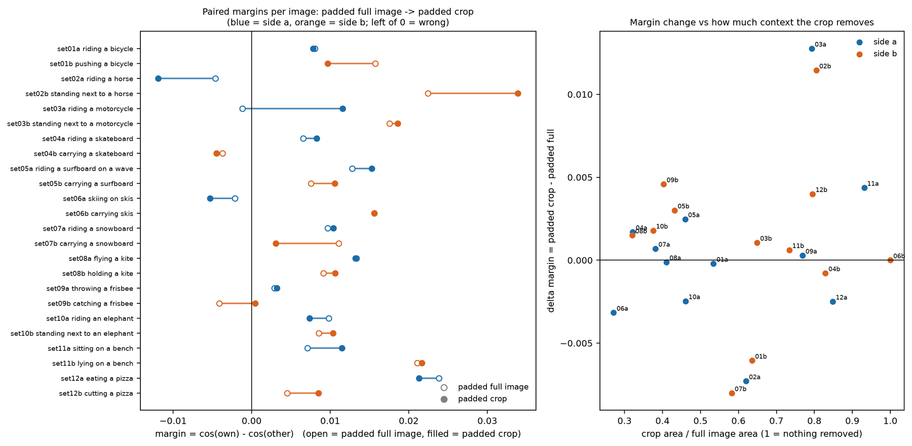
Result: removing the context has little effect. With padding in both conditions, accuracy goes from 19/24 to 21/24 and both-correct sets from 7/12 to 9/12. Two images flip from wrong to right (set03a riding a motorcycle, set09b catching a frisbee) and none flip back; with two flips an exact McNemar test gives p = 0.50. The mean margin change is +0.0008, with a 95% bootstrap interval over sets of [−0.0007, +0.0025] (10,000 resamples, both images of a set resampled together). Margins go up for 14 images and down for 9 (sign test p = 0.40), and per set 8 go up and 4 down (p = 0.39). The direction agrees with the dilution idea, but the effect is about a tenth of a typical margin and cannot be told from zero with 24 images. Object recognition is perfect in both conditions, and set02a, set04b and set06a are wrong with and without context. Padding alone also matters: going from the standard to the padded full image changes no content, yet it flips 5 images and moves margins by a median of 0.0049, about 60% of the median margin, so harmless preprocessing choices decide several images either way.
Alternative explanations and limits
- Zoom and context change together in the crop. The margin change shows no clear relation to the zoom factor (r = −0.08) or to the share of the image the crop keeps (r = +0.18), but 24 images say little, so I cannot separate the two.
- Context is evidence as well as noise. A wave, a slope or a road can support an action, and the crop removes it along with the distractors. A near-zero average may hide images that gain and images that lose for these opposite reasons.
- Padding changes the input distribution, since CLIP rarely saw grey bars in training. Both padded conditions share this, so it should not bias their comparison, but it is why Task 2 uses the standard full images.
- Sample size and selection. 12 sets and 24 images give every test here low power, and the COCO caption search plus the visual check favour clear, typical scenes, so effect sizes may not carry over to other photos.
4. Conclusions
- ViT-B/16 turns a 224×224 image into 196 patch tokens plus a [CLS] token through one linear projection, and its positional embeddings recover the 2-D grid. It reaches 17/20 (strict) and 19/20 (lenient) on my images; its errors come mostly from the fixed label set.
- CLIP's scoring is normalise, cosine, multiply by 100, softmax, and my implementation reproduces CLIP's logits to float32 rounding. Softmax probabilities are relative to the candidate list. Prompt wording left accuracy at 20/20 and changed only the margins. Image embeddings group by category and also reflect scene and texture.
- CLIP recognises the object in 24/24 Part 3 images but separates two actions on it in only 18/24 images (7/12 sets). Removing the background has little effect, and preprocessing details alone flip several decisions.
Image credits. Photos from COCO 2017, originally on Flickr. CC BY 2.0: ids 8999, 42820, 59708, 71713, 90843, 93053, 99642, 102330, 122998, 123916, 137734, 147913, 209287, 232121, 248631, 252759, 286141, 296257, 319322, 328238, 353027, 360393, 417153, 443742, 514083, 527453, 551518, 558661; CC BY-SA 2.0: ids 7757, 58008, 93287, 102333, 132510, 141759, 172977, 178751, 220226, 371004, 461458, 530509, 545950, 565572, 570268; CC BY-NC-SA 2.0: ids 418816. Shown resized or cropped, for non-commercial coursework, with attribution.